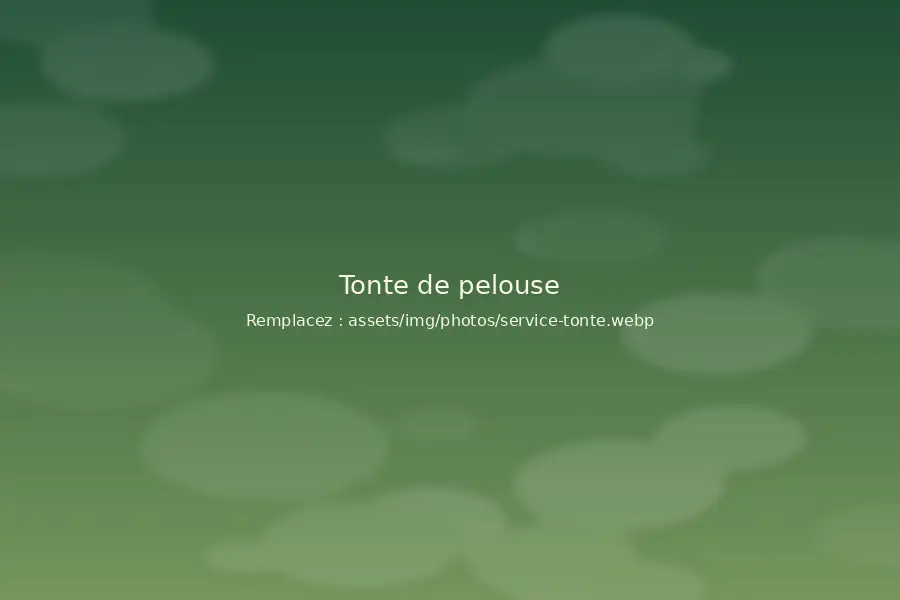
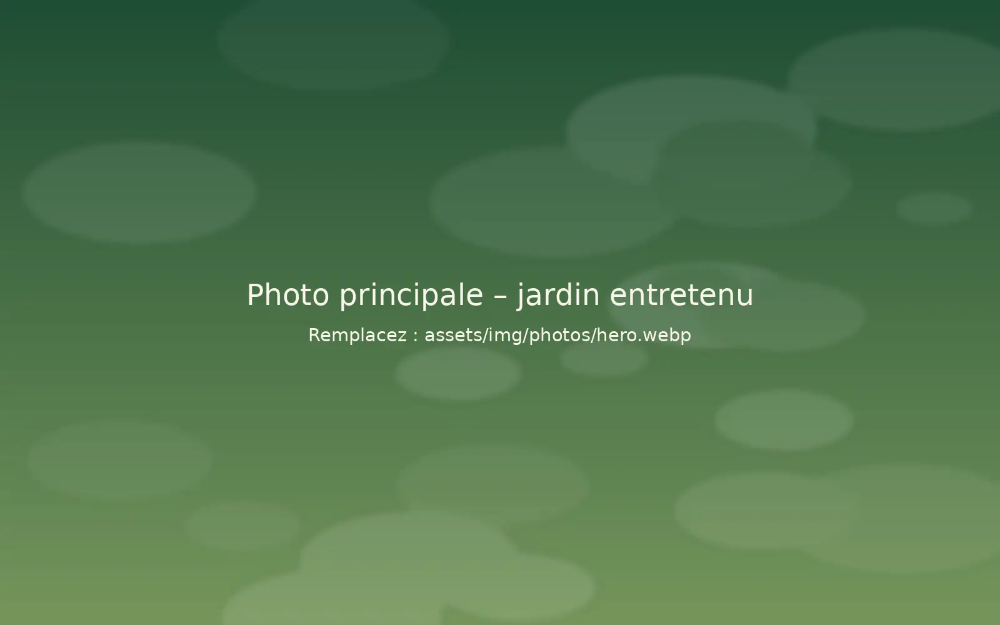
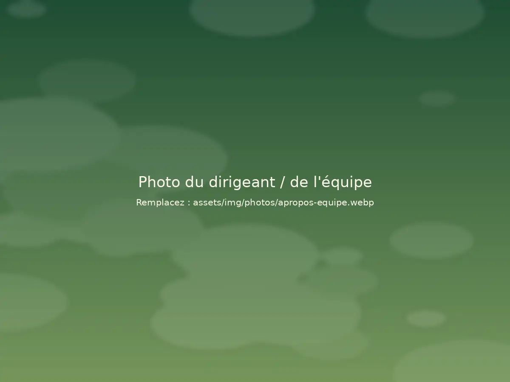
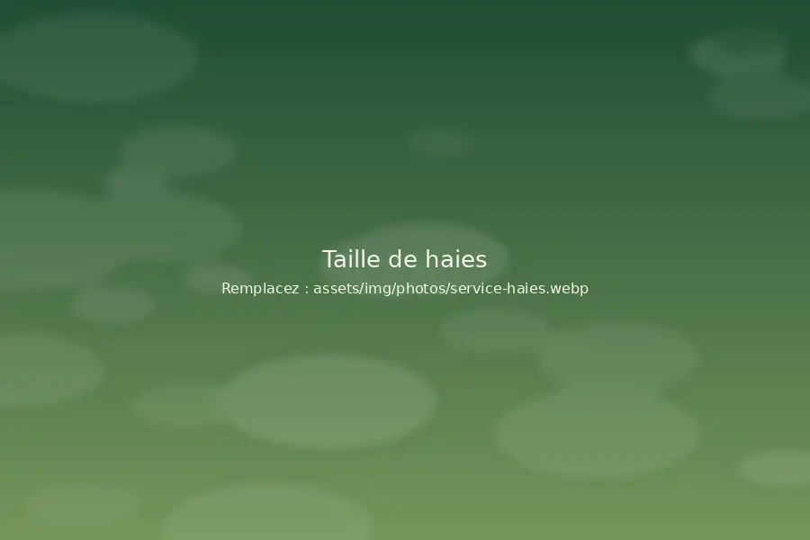

Tonte de pelouse
Une pelouse nette, dense et régulière toute la saison, avec ramassage ou mulching selon vos préférences.
En savoir plus sur : Tonte de pelouse
Paysagiste · Isère, Loire & alentours
LKH Service entretient et aménage vos espaces verts : tonte, taille de haies, débroussaillage, élagage, création de jardins. Pour les particuliers comme pour les professionnels, avec le sourire et le souci du travail bien fait.

Bienvenue chez LKH Service
Installé à Saint-Pierre-de-Bœuf, au cœur de la vallée du Rhône, LKH Service intervient chez vous pour tous vos travaux d'espaces verts, ponctuels ou réguliers.
Notre promesse est simple : un travail soigné, des horaires respectés, un chantier propre à notre départ et des conseils honnêtes pour que votre jardin reste beau longtemps. Nous privilégions des pratiques respectueuses de l'environnement : zéro pesticide de synthèse, valorisation des déchets verts et choix de végétaux adaptés au climat local.
Nos services phares
Des prestations à la carte ou en contrat annuel, adaptées à la taille de votre terrain et à vos envies.

Une pelouse nette, dense et régulière toute la saison, avec ramassage ou mulching selon vos préférences.
En savoir plus sur : Tonte de pelouse
Des haies bien formées et des arbustes harmonieux, taillés au bon moment pour leur santé et leur floraison.
En savoir plus sur : Taille de haies et d'arbustes
Remise en état de terrains envahis par les ronces et la végétation, y compris en zone de pente.
En savoir plus sur : Débroussaillage
Élagage raisonné de vos arbres pour la sécurité, la lumière et la bonne santé des sujets.
En savoir plus sur : Élagage
Allées, terrasses et massifs propres, sans produits chimiques de synthèse.
En savoir plus sur : Désherbage
Des massifs fleuris et soignés, de la taille des vivaces au paillage.
En savoir plus sur : Entretien de massifsd'expérience en espaces verts
clients accompagnés
pour recevoir votre devis
des déchets verts valorisés
Pourquoi nous choisir
Un prix détaillé, sans surprise, établi après échange ou visite. Vous décidez en toute sérénité.
Réponse sous 48 h ouvrées et interventions planifiées aux dates convenues.
Entreprise immatriculée et couverte par une assurance responsabilité civile professionnelle.
Déchets verts ramassés et évacués vers des filières de valorisation agréées.
Zéro pesticide de synthèse, paillage, tailles respectueuses du cycle des végétaux et de la faune.
Nous vous aidons à choisir les bons végétaux et le bon rythme d'entretien pour votre jardin.
Avant / après
Faites glisser le curseur pour comparer l'avant et l'après.
Ils nous font confiance
« Haie taillée au millimètre et jardin laissé impeccable. Ponctuel, souriant et de bon conseil. Je recommande ! »
« Nous avons confié l'entretien des espaces verts de notre résidence à LKH Service : réactivité et sérieux au rendez-vous. »
« Terrain en friche transformé en quelques jours. Devis clair, délais tenus, aucun déchet laissé sur place. »
Avis donnés à titre d'exemple de mise en page : à remplacer par de vrais avis clients avant la mise en ligne.
Zone d'intervention
Basés à Saint-Pierre-de-Bœuf, nous intervenons des deux côtés du Rhône, dans un rayon d'environ 30 km.
Devis gratuit et personnalisé
Devis gratuit, sans engagement, sous 48 h ouvrées. Dites-nous ce dont vous avez besoin, on s'occupe du reste.